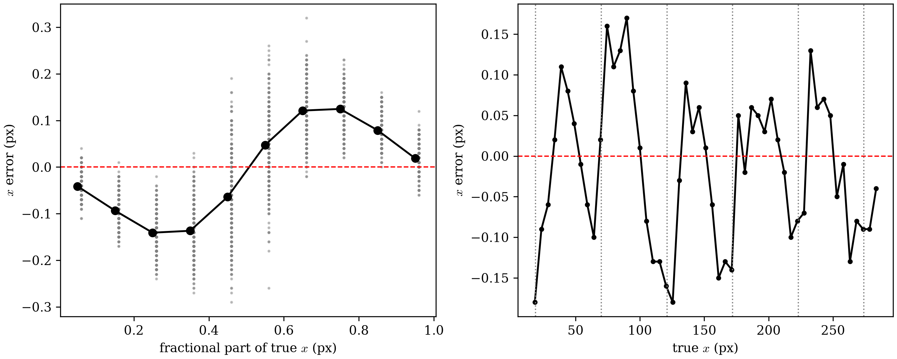
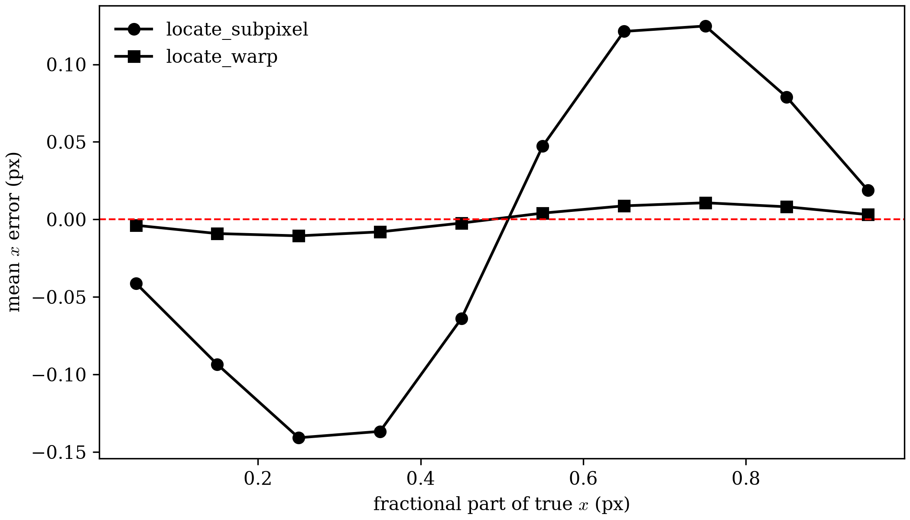
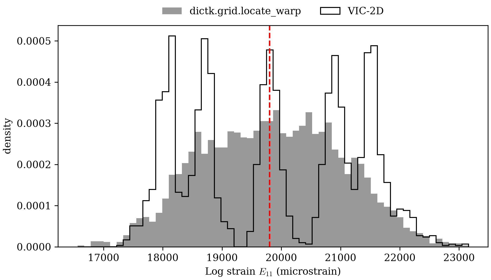

Kernel Warping
High Point Density left a wide strain distribution unexplained. Its 11024 Gauss points ranged from about -16400 to 106100 microstrain. VIC-2D's own measurements of the same stretch stayed between about 17300 and 23100. That page blamed element size: a fixed tracking error, divided by a small , becomes a large strain error.
That explanation leaves out the tracking error's shape. This page
measures the error against each point's known true position. The error
follows a wave, about ±0.13 px tall, tied to where each point's true
position falls within its pixel. That wave explains High Point Density's
vertical stripes.
This page introduces locate_warp, a subpixel method different from
locate_subpixel. It cuts the error's standard deviation from
0.109 px to 0.008 px. Relative
to the locate_subpixel baseline, locate_warp shrinks the strain
spread by a factor of 14, from a standard deviation of 16531 to 1161
microstrain.
Pixel Locking
The subject 2% stretch sends every reference point to a new known location,
( remains constant for all points). High Point
Density's own locate_subpixel call already tracked all 2862 of those
points. Subtracting each point's known true
position from its tracked one gives the tracking error:
- x error: mean -0.0110 px, std 0.1091 px
- y error: mean +0.0005 px, std 0.0385 px
Each row's x error vs. the all-row mean: correlation 0.82 to 0.94; row 27 (y = 151 px): 0.82
Saved: kernel_warping_pixel_locking.png

The left panel shows the error depends on where the true position sits
within its pixel. Points just past a whole pixel read low. Points just
short of the next whole pixel read high. Points at an exact half pixel
read about right. This is pixel locking: a subpixel estimator's
answer drifts toward whole-pixel values. locate_subpixel refines the
peak of an upsampled phase correlation surface. That surface comes from
a zero-padded kernel, and its peak shifts in a way that depends on the
true fractional position. About half of this wave's size comes
from how the stretched image itself was made: image.stretch uses
bilinear interpolation. The Residual
Wave separates the two causes.
The right panel shows why this matters for strain. Every reference position on the grid is a whole pixel. So the true position, , has the same fractional part as . That fractional part climbs from 0 to 1, then wraps back to 0, each time grows by 1. That takes reference pixels. The stretch scales those 50 px by 1.02, so one cycle spans pixels in the current image. So the bias itself forms a wave along , about 0.13 px tall and 51 px long. Strain measures the slope of displacement. The slope of that wave swings to about , or 16000 microstrain. That matches the scale of High Point Density's measured standard deviation, 16531 microstrain. The same wave explains the vertical stripes in that page's field figure, one stripe pair per cycle.
It also explains why Simple Stretch Revisited never saw this. That page spaced its points 50 px apart, one full bias cycle. Every true position landed on a whole pixel, so every node sat at the same point on the wave. High Point Density's 5 px spacing spread the nodes across the whole wave, and the error showed up in every element.
Inverse Compositional Gauss-Newton
Commercial DIC codes such as VIC-2D warp the kernel itself, instead of
refining a correlation peak (as done by locate_subpixel).
dictk.grid.locate_warp warps
the kernel too, as VIC-2D does. It works in two stages.
First, dictk.translation.locate
finds the nearest whole pixel. Second, inverse compositional
Gauss-Newton (IC-GN) refines it. IC-GN lets the reference kernel
deform by an affine warp, , with six
parameters: , , , ,
, and . and are the displacements along and .
The subscripts mark their gradients across the kernel, so
and :
Here labels each pixel of the reference kernel by its fixed offset from the kernel's center, from to px here. The warp maps each such pixel to its position in the current image. IC-GN searches for the that minimizes the zero-normalized sum of squared differences (ZNSSD) between the reference kernel and the current image sampled through the warp, :
Each iteration solves for a small update to the reference kernel. It then composes that update's inverse into the current warp, . The inverse compositional form puts all gradient work on . It computes the Hessian once per point, not once per iteration. Cubic B-splines sample at the warped, fractional positions. The tracked position is the warp's own translation, .
locate and locate_subpixel never warp their kernel. Each cuts an
axis-aligned square from reference_image. Each slides that square,
unchanged, across the search area. The only thing either one finds is
a translation. In contrast, locate_warp finds how the kernel
translates and deforms.
One point, at , under an exaggerated deformation shows the difference. The current image stretches 7% along and shears by 0.05. The 7% stretch is 3.5 times this page's 2%, large enough to see the warp.
A shift then moves the point by a fractional number of pixels. A
whole-pixel shift would hand locate an exact answer by construction,
since locate only returns whole pixels. So the first table tracks
the point under 30 random fractional shifts, each between 4 and 8 px
along and between 2 and 6 px along . The figure uses the one
shift whose three errors sit closest to the three median errors in
that table. The second table tracks that shift. Then come the warp
matrices, , from locate_subpixel and locate_warp,
followed by the true one:
Across 30 random fractional shifts:
| Function | Smallest error (px) | Median error (px) | Largest error (px) |
|---|---|---|---|
locate | 0.081 | 0.462 | 0.658 |
locate_subpixel | 0.054 | 0.105 | 0.150 |
locate_warp | 0.001 | 0.003 | 0.006 |
The most typical shift, (6.43, 4.92) px, puts the true position at (156.43, 154.92):
| Function | Found | Found | Error (px) |
|---|---|---|---|
locate | 156.000 | 155.000 | 0.437 |
locate_subpixel | 156.340 | 154.970 | 0.103 |
locate_warp | 156.432 | 154.918 | 0.003 |
![two zoomed panels of the same deformed speckle image around one point. In both, a dashed white square marks the reference kernel at (150, 150), an orange arrow points to the tracked position, and a red cross marks the true position at (156.43, 154.92). Left: an orange axis-aligned square with a 10x10 grid of orange dots, the same shape as the reference square, moved by the arrow. Right: an orange parallelogram, slightly wider than the square and leaning right toward the bottom, with its 10x10 grid of dots stretched and sheared to match](kernel_warping_panels.png)
locate and locate_subpixel move the square without changing its shape (drawn at locate_subpixel's position). Right: locate_warp also stretches and shears the kernel. Its outline and sample points use the warp IC-GN fitted, .Across all 30 shifts, locate misses by a median 0.462 px, since it
rounds to a whole pixel. locate_subpixel misses by a median 0.105
px, because its rigid square no longer matches the stretched and
sheared content. locate_warp misses by a median 0.003 px, about 35
times smaller than locate_subpixel's. Even locate_warp's largest
miss over all 30 shifts, 0.006 px, is about 9 times smaller than
locate_subpixel's smallest, 0.054 px.
keeps an identity block in
its upper left. A rigid kernel can only translate, so its four
gradient terms stay at zero. is
the warp IC-GN fitted.
dictk.warp.fit returns it directly.
Its gradient block matches to within
0.0001. Its translation matches to within 0.003 px.
Two things remove the bias. The spline samples the image itself at
fractional positions, so no correlation peak needs interpolating. The
affine warp also lets the kernel stretch along with the material,
instead of forcing a rigid match. The call mirrors locate_subpixel,
with the same grid and margins:
from dictk.grid import locate_warp
found = locate_warp(
reference_image=reference_image,
current_image=current_image,
reference_points=points,
kernel_margin_width=13,
kernel_margin_height=13,
search_margin_width=25,
search_margin_height=25,
)
The same fractional-position error curve, now for both trackers:
| Tracker | Time (s) | Mean error (px) | Std error (px) | Max | error| (px) |
|---|---|---|---|---|
locate_subpixel | 1.8 | -0.0110 | 0.1091 | 0.3200 |
locate_warp | 1.7 | -0.0000 | 0.0080 | 0.0234 |

locate_subpixel (circles) and locate_warp (squares), across all 2862 points.The error standard deviation falls from 0.109 px to 0.008 px. The table lists both run times. For all 2862 points they differ by less than a second. A residual wave, about 0.01 px tall, remains. The Residual Wave traces it to the test image.
Strain at Full Density, Again
High Point Density's strain pipeline stays the same:
dictk.grid.elements for
connectivity, then
gauss_point_log_strains
at each Gauss point. Only the tracked positions change:
| Source | Mean (µε) | Std (µε) | Min (µε) | Max (µε) | Inside [17560, 22360] |
|---|---|---|---|---|---|
locate_subpixel + Q4 | 20465 | 16531 | -16446 | 106134 | 9.5% |
locate_warp + Q4 | 19851 | 1161 | 16562 | 23160 | 97.4% |
| VIC-2D | 19876 | 1385 | 17330 | 23137 | 98.2% |
| Analytical, | 19803 | 0 |
The spread falls from 16531 to 1161 microstrain. The range now sits where VIC-2D's does. Of the 11024 Gauss points, 97.4% land inside VIC-2D's own colorbar range, up from 9.5%. The standard deviation, 1161 microstrain, comes in under VIC-2D's 1385. The element code is unchanged from High Point Density, so the tracker accounts for the whole drop from 16531 to 1161 microstrain.

dictk's from locate_warp (right). Both use `17560`-`22360` microstrain and VIC-2D's own 16-band color scale. In High Point Density's version of the right panel, only 9.5% of the Gauss points fell inside this range. The rest clipped to solid magenta or solid red. This one uses the whole scale.
dictk's from locate_warp (gray, 11024 Gauss points) and VIC-2D's (black outline, 2682 points), each normalized to unit area. The dashed red line marks microstrain.The two distributions now cover the same range. Their shapes still
differ. VIC-2D's splits into five clusters. dictk's forms one broad
peak. Both fields keep vertical stripes. Both tools measured the
same bilinear images, and The Residual Wave
below shows those images carry a distortion of their own, tied to each
point's fractional position. Each tracker responds to it differently.
Neither result is smoothed. Commercial codes usually also apply a
strain window, fitting displacement over a neighborhood of points
before differentiating. That trades spatial resolution for a smaller strain spread. A 15x15-point
window, spanning 75 px here, cut locate_warp's spread from 1161 to
39 microstrain in an exploratory test. Path Forward records it as a next step.
Fixing the bias first matters. A window spanning a whole bias cycle
would also flatten High Point Density's stripes. That averaging would
hide the error while leaving it in the tracked positions.
The Residual Wave
locate_warp's leftover 0.01 px wave starts outside the tracker.
dictk.image.stretch builds the current image with bilinear
interpolation. Bilinear interpolation moves content by a fractional
pixel, and it also blurs that content. The blur depends on the
fraction. A whole-pixel position gets none, and a half-pixel position
gets the most. So the stretched image differs from a true
stretch, by an amount that follows each point's fractional position.
Any tracker reads that difference as a position-dependent error. The
table below measures how large.
A quintic spline has no fraction-dependent blur like bilinear interpolation's. It builds a second version of the same 2% stretch. Tracking both versions shows how much of each tracker's error came from the image:
| Current image | Tracker | Std error (px) | Std (µε) |
|---|---|---|---|
bilinear (image.stretch) | locate_subpixel | 0.1091 | 16531 |
bilinear (image.stretch) | locate_warp | 0.0080 | 1161 |
| quintic spline | locate_subpixel | 0.0568 | 10274 |
| quintic spline | locate_warp | 0.0015 | 260 |
With the quintic-spline image, locate_warp's error falls from 0.008 px
to 0.0015 px. Its strain spread falls from 1161 to 260 microstrain. Removing
the generator's distortion cuts IC-GN's error by a factor of 5. locate_subpixel improves
too, from 0.109 px to 0.057 px, but its strain spread stays above 10000
microstrain. About half of phase correlation's error came from the
generator. The other half belongs to the tracker.
Every other figure on this page keeps image.stretch. VIC-2D measured
those same bilinear images, so the comparison with VIC-2D stays fair.
dictk's own tests of fractional translation avoid the generator
entirely. They shift a smoothed speckle image by an exact fraction of
a pixel, in the Fourier domain. There, locate_warp recovers every
tested shift to within 0.005 px, and beats locate_subpixel every
time.
Continue to Timing at Scale for how tracking time grows with point count.
kernel_warping_pixel_locking.py
"""Pixel locking: `grid.locate_subpixel`'s own x-error against each
point's known true position, at High Point Density's full 53x54 grid.
Plots the error against the true position's fractional part, and along
one row of the grid.
"""
import matplotlib.pyplot as plt
import numpy as np
from dictk.grid import generate, locate_subpixel
from dictk.image import PixelCoordinate, read, stretch
plt.rcParams.update({"font.family": "serif", "mathtext.fontset": "cm"})
FACTOR_X = 1.02
reference_image = read(path="astronaut0.png")
current_image = stretch(arr=reference_image, factor_x=FACTOR_X)
points = generate(
origin=PixelCoordinate(x=18, y=16),
count_x=53,
count_y=54,
spacing_x=5,
spacing_y=5,
)
found = locate_subpixel(
reference_image=reference_image,
current_image=current_image,
reference_points=points,
kernel_margin_width=13,
kernel_margin_height=13,
search_margin_width=25,
search_margin_height=25,
upsample_factor=100,
)
true_x = np.array([p.x * FACTOR_X for p in points])
error_x = np.array([f.x for f in found]) - true_x
error_y = np.array([f.y - p.y for f, p in zip(found, points)])
fraction = true_x % 1
print(f"* x error: mean {error_x.mean():+.4f} px, std {error_x.std():.4f} px")
print(f"* y error: mean {error_y.mean():+.4f} px, std {error_y.std():.4f} px")
row = 27
rows = error_x.reshape(54, 53)
row_mean = rows.mean(axis=0)
correlations = [np.corrcoef(r, row_mean)[0, 1] for r in rows]
print()
print(
f"Each row's x error vs. the all-row mean: correlation "
f"{min(correlations):.2f} to {max(correlations):.2f}; "
f"row {row} (y = {points[row * 53].y} px): {correlations[row]:.2f}"
)
bins = np.linspace(0, 1, 11)
centers = (bins[:-1] + bins[1:]) / 2
means = [
error_x[(fraction >= a) & (fraction < b)].mean() for a, b in zip(bins, bins[1:])
]
fig, (left, right) = plt.subplots(1, 2, figsize=(10, 4), constrained_layout=True)
left.scatter(fraction, error_x, s=2, color="gray", alpha=0.4)
left.plot(centers, means, color="black", marker="o")
left.axhline(0, color="red", linestyle="--", linewidth=1)
left.set_xlabel(r"fractional part of true $x$ (px)")
left.set_ylabel(r"$x$ error (px)")
row_x = true_x.reshape(54, 53)[row]
right.plot(row_x, error_x.reshape(54, 53)[row], color="black", marker=".")
right.axhline(0, color="red", linestyle="--", linewidth=1)
for boundary in np.arange(np.ceil(row_x[0]), row_x[-1], 50 * FACTOR_X):
right.axvline(boundary, color="gray", linestyle=":", linewidth=1)
right.set_xlabel(r"true $x$ (px)")
right.set_ylabel(r"$x$ error (px)")
fig.savefig("kernel_warping_pixel_locking.png", dpi=300)
print()
print("Saved: kernel_warping_pixel_locking.png")
kernel_warping_panels.py
"""Side-by-side illustration of the kernel `locate`/`locate_subpixel`
match (left) against the kernel `locate_warp` warps (right), on one
point under an exaggerated affine deformation.
First sweeps 30 random fractional shifts under that deformation and
reports each function's median error. The figure then uses the shift
whose three errors sit closest to those medians, so the example is
typical, not hand-picked.
"""
import matplotlib.pyplot as plt
import numpy as np
from matplotlib.patches import Polygon
from scipy.ndimage import affine_transform
from dictk import translation, warp
from dictk.image import PixelCoordinate, read
plt.rcParams.update({"font.family": "serif", "mathtext.fontset": "cm"})
# Deformation gradient in (x, y) order: 7% stretch along x plus 0.05
# shear, exaggerated beyond this page's 2% so the warp is visible, with
# distinct values so each one is easy to spot in the printed matrices.
# 15% with 0.15 shear defeats the whole-pixel starting match for about
# a third of shifts; 7% with 0.05 shear defeats none of the 30 below.
F = np.array([[1.07, 0.05], [0.0, 1.0]])
POINT = PixelCoordinate(x=150, y=150)
MARGIN = 13
SEARCH_MARGIN = 25
SHIFT_COUNT = 30
DOT_COUNT = 10
ZOOM = 34
reference_image = read(path="astronaut0.png")
pivot = np.array([POINT.x, POINT.y], dtype=np.float64)
# affine_transform maps each output (row, column) back to its input
# position, so it takes the inverse deformation, in (y, x) order.
inverse = np.linalg.inv(F)[::-1, ::-1]
def deformed(shift):
offset = pivot[::-1] - inverse @ (pivot[::-1] + shift[::-1])
return affine_transform(
reference_image.astype(np.float64), inverse, offset=offset, order=5
)
def tracked(current_image):
kwargs = dict(
reference_image=reference_image,
current_image=current_image,
reference_point=POINT,
search_center=POINT,
kernel_margin_width=MARGIN,
kernel_margin_height=MARGIN,
search_margin_width=SEARCH_MARGIN,
search_margin_height=SEARCH_MARGIN,
)
return (
translation.locate(**kwargs),
translation.locate_subpixel(**kwargs),
warp.locate(**kwargs),
warp.fit(**kwargs),
)
names = ["`locate`", "`locate_subpixel`", "`locate_warp`"]
# Rounded to 0.01 px, so each shift prints exactly as used.
shifts = np.round(
np.random.default_rng(0).uniform([4, 2], [8, 6], size=(SHIFT_COUNT, 2)), 2
)
errors = np.array(
[
[
np.hypot(*(np.array([f.x, f.y]) - pivot - shift))
for f in tracked(deformed(shift))[:3]
]
for shift in shifts
]
)
medians = np.median(errors, axis=0)
print(f"Across {SHIFT_COUNT} random fractional shifts:")
print()
print("| Function | Smallest error (px) | Median error (px) | Largest error (px) |")
print("|---|---|---|---|")
for name, smallest, median, largest in zip(
names, errors.min(axis=0), medians, errors.max(axis=0)
):
print(f"| {name} | {smallest:.3f} | {median:.3f} | {largest:.3f} |")
typical = int(np.argmin((np.abs(errors - medians) / medians).sum(axis=1)))
TRANSLATION = shifts[typical]
current_image = deformed(TRANSLATION)
true_position = pivot + TRANSLATION
found_locate, found_subpixel, found_warp, fitted = tracked(current_image)
print()
print(
f"The most typical shift, ({TRANSLATION[0]:.2f}, {TRANSLATION[1]:.2f}) px, "
f"puts the true position at ({true_position[0]:.2f}, {true_position[1]:.2f}):"
)
print()
print("| Function | Found $x$ | Found $y$ | Error (px) |")
print("|---|---|---|---|")
for name, found in zip(names, [found_locate, found_subpixel, found_warp]):
error = np.hypot(found.x - true_position[0], found.y - true_position[1])
print(f"| {name} | {found.x:.3f} | {found.y:.3f} | {error:.3f} |")
rigid = np.array(
[
[1.0, 0.0, found_subpixel.x - POINT.x],
[0.0, 1.0, found_subpixel.y - POINT.y],
[0.0, 0.0, 1.0],
]
)
true = np.eye(3)
true[:2, :2] = F
true[:2, 2] = TRANSLATION
def latex(matrix, exact):
"""`matrix` as a LaTeX bmatrix. Entries where `exact` is True are
fixed by construction and print as given (`1`, `0`, `1.15`), not
padded to four decimals."""
rows = [
" & ".join(
f"{value:g}" if fixed else f"{value:.4f}"
for value, fixed in zip(row, fixed_row)
)
for row, fixed_row in zip(matrix, exact)
]
return "\\begin{bmatrix}" + " \\\\ ".join(rows) + "\\end{bmatrix}"
bottom_row = np.zeros((3, 3), dtype=bool)
bottom_row[2] = True
rigid_exact = bottom_row.copy()
rigid_exact[:2, :2] = True
for name, matrix, exact, note in [
(r"locate\_subpixel", rigid, rigid_exact, r" \quad (u_x = u_y = v_x = v_y = 0)"),
(r"locate\_warp", fitted, bottom_row, ""),
("true", true, np.ones((3, 3), dtype=bool), ""),
]:
print()
print("$$")
print(f"\\boldsymbol{{W}}_\\text{{{name}}} = {latex(matrix, exact)}{note}")
print("$$")
offsets = np.linspace(-MARGIN, MARGIN, DOT_COUNT)
grid = np.array([(dx, dy) for dy in offsets for dx in offsets])
square = np.array(
[[-MARGIN, -MARGIN], [MARGIN, -MARGIN], [MARGIN, MARGIN], [-MARGIN, MARGIN]]
)
fig, (left, right) = plt.subplots(1, 2, figsize=(10, 5.2), constrained_layout=True)
for ax in (left, right):
ax.imshow(current_image, cmap="gray", vmin=0, vmax=255)
ax.set_xlim(pivot[0] - ZOOM, pivot[0] + ZOOM)
ax.set_ylim(pivot[1] + ZOOM, pivot[1] - ZOOM)
ax.set_xlabel("x (pixels)")
ax.set_ylabel("y (pixels)")
ax.add_patch(
Polygon(
pivot + square,
fill=False,
edgecolor="white",
linestyle="--",
linewidth=1.5,
)
)
ax.plot(*true_position, marker="+", color="red", markersize=14, mew=2)
for ax, found, corners, dots, title in [
(
left,
found_subpixel,
square,
grid,
"locate, locate_subpixel: rigid square kernel",
),
(
right,
found_warp,
square @ fitted[:2, :2].T,
grid @ fitted[:2, :2].T,
"locate_warp: affine-warped kernel",
),
]:
center = np.array([found.x, found.y])
ax.annotate(
"",
xy=center,
xytext=pivot,
arrowprops=dict(arrowstyle="-|>", color="orange", linewidth=2),
)
ax.add_patch(Polygon(center + corners, fill=False, edgecolor="orange", linewidth=2))
ax.scatter(*(center + dots).T, s=8, color="orange")
ax.set_title(title)
fig.savefig("kernel_warping_panels.png", dpi=300)
kernel_warping_bias.py
"""The same fractional-position error curve as
kernel_warping_pixel_locking.py, for both `grid.locate_subpixel` and
`grid.locate_warp`, on the same axes.
"""
import time
import matplotlib.pyplot as plt
import numpy as np
from dictk.grid import generate, locate_subpixel, locate_warp
from dictk.image import PixelCoordinate, read, stretch
plt.rcParams.update({"font.family": "serif", "mathtext.fontset": "cm"})
FACTOR_X = 1.02
reference_image = read(path="astronaut0.png")
current_image = stretch(arr=reference_image, factor_x=FACTOR_X)
points = generate(
origin=PixelCoordinate(x=18, y=16),
count_x=53,
count_y=54,
spacing_x=5,
spacing_y=5,
)
kwargs = dict(
reference_image=reference_image,
current_image=current_image,
reference_points=points,
kernel_margin_width=13,
kernel_margin_height=13,
search_margin_width=25,
search_margin_height=25,
)
true_x = np.array([p.x * FACTOR_X for p in points])
fraction = true_x % 1
bins = np.linspace(0, 1, 11)
centers = (bins[:-1] + bins[1:]) / 2
fig, ax = plt.subplots(figsize=(7, 4), constrained_layout=True)
print(
"| Tracker | Time (s) | Mean $x$ error (px) | Std $x$ error (px) | Max \\|$x$ error\\| (px) |"
)
print("|---|---|---|---|---|")
for name, locate, extra, marker in [
("`locate_subpixel`", locate_subpixel, dict(upsample_factor=100), "o"),
("`locate_warp`", locate_warp, {}, "s"),
]:
start = time.perf_counter()
found = locate(**kwargs, **extra)
elapsed = time.perf_counter() - start
error_x = np.array([f.x for f in found]) - true_x
print(
f"| {name} | {elapsed:.1f} | {error_x.mean():+.4f} | {error_x.std():.4f} "
f"| {np.abs(error_x).max():.4f} |"
)
means = [
error_x[(fraction >= a) & (fraction < b)].mean() for a, b in zip(bins, bins[1:])
]
ax.plot(centers, means, color="black", marker=marker, label=name.strip("`"))
ax.axhline(0, color="red", linestyle="--", linewidth=1)
ax.set_xlabel(r"fractional part of true $x$ (px)")
ax.set_ylabel(r"mean $x$ error (px)")
ax.legend(frameon=False)
fig.savefig("kernel_warping_bias.png", dpi=300)
kernel_warping_strain.py
"""High Point Density's own strain pipeline, rerun on `grid.locate_warp`
positions: a summary table against `grid.locate_subpixel` and VIC-2D,
the field on VIC-2D's own colorbar, and the distribution against
VIC-2D's own.
"""
import csv
import matplotlib.pyplot as plt
import numpy as np
from matplotlib.colors import ListedColormap
from dictk.element import gauss_point_coordinates, gauss_point_log_strains
from dictk.grid import elements, generate, locate_subpixel, locate_warp
from dictk.image import PixelCoordinate, read, stretch
from dictk.plot import element_strain_plot
plt.rcParams.update({"font.family": "serif", "mathtext.fontset": "cm"})
FACTOR_X = 1.02
VMIN, VMAX = 17560, 22360
reference_image = read(path="astronaut0.png")
current_image = stretch(arr=reference_image, factor_x=FACTOR_X)
points = generate(
origin=PixelCoordinate(x=18, y=16),
count_x=53,
count_y=54,
spacing_x=5,
spacing_y=5,
)
kwargs = dict(
reference_image=reference_image,
current_image=current_image,
reference_points=points,
kernel_margin_width=13,
kernel_margin_height=13,
search_margin_width=25,
search_margin_height=25,
)
element_indices = elements(count_x=53, count_y=54)
def strains(found):
values, coordinates = [], []
for element in element_indices:
current_corners = [found[i] for i in element]
values.extend(
strain[0, 0]
for strain in gauss_point_log_strains(
reference_points=[points[i] for i in element],
current_points=current_corners,
)
)
coordinates.extend(gauss_point_coordinates(points=current_corners))
return np.array(values) * 1e6, coordinates
phase, _ = strains(locate_subpixel(**kwargs, upsample_factor=100))
found = locate_warp(**kwargs)
warp, coordinates = strains(found)
with open("../verification/simple_stretch_vic_out.csv") as f:
rows = [{k.strip(' "'): v for k, v in row.items()} for row in csv.DictReader(f)]
vic = np.array([float(r["exx"]) * 1e6 for r in rows if float(r["sigma"]) != -1])
analytical = np.log(FACTOR_X) * 1e6
print(
f"| Source | Mean (µε) | Std (µε) | Min (µε) | Max (µε) | Inside [{VMIN}, {VMAX}] |"
)
print("|---|---|---|---|---|---|")
for name, values in [
("`locate_subpixel` + Q4", phase),
("`locate_warp` + Q4", warp),
("VIC-2D", vic),
]:
inside = np.mean((values >= VMIN) & (values <= VMAX)) * 100
print(
f"| {name} | {values.mean():.0f} | {values.std():.0f} | {values.min():.0f} "
f"| {values.max():.0f} | {inside:.1f}% |"
)
print(f"| Analytical, $\\ln(1.02)$ | {analytical:.0f} | 0 | | | |")
vic2d_cmap = ListedColormap(
[
(0.8314, 0.0000, 1.0000),
(0.5176, 0.0000, 1.0000),
(0.1843, 0.0000, 1.0000),
(0.0000, 0.1333, 1.0000),
(0.0000, 0.4510, 1.0000),
(0.0000, 0.7843, 1.0000),
(0.0000, 1.0000, 0.8980),
(0.0000, 1.0000, 0.5843),
(0.0000, 1.0000, 0.2510),
(0.0667, 1.0000, 0.0000),
(0.3843, 1.0000, 0.0000),
(0.7176, 1.0000, 0.0000),
(1.0000, 0.9686, 0.0000),
(1.0000, 0.6510, 0.0000),
(1.0000, 0.3176, 0.0000),
(1.0000, 0.0000, 0.0000),
]
)
element_strain_plot(
points=found,
elements=element_indices,
coordinates=coordinates,
values=warp,
label=r"Log Strain, $E_{11}$ (microstrain)",
image=current_image,
dot_size=6,
marker="s",
show_mesh_lines=False,
cmap=vic2d_cmap,
vmin=VMIN,
vmax=VMAX,
figsize=(6.9, 6.0),
path="kernel_warping_strain_vic_colorbar.png",
)
fig, ax = plt.subplots(figsize=(7, 4), constrained_layout=True)
bins = np.linspace(min(warp.min(), vic.min()), max(warp.max(), vic.max()), 61)
ax.hist(
warp,
bins=bins,
density=True,
color="gray",
alpha=0.8,
label="dictk.grid.locate_warp",
)
ax.hist(vic, bins=bins, density=True, histtype="step", color="black", label="VIC-2D")
ax.axvline(analytical, color="red", linestyle="--", linewidth=1.5)
ax.set_xlabel(r"Log strain $E_{11}$ (microstrain)")
ax.set_ylabel("density")
ax.legend(loc="lower center", bbox_to_anchor=(0.5, 1.0), ncol=2, frameon=False)
fig.savefig("kernel_warping_strain_histogram.png", dpi=300)
kernel_warping_generator.py
"""The same 2% stretch, generated two ways: `dictk.image.stretch`'s own
bilinear interpolation, and a quintic spline. Tracks both with
`grid.locate_subpixel` and `grid.locate_warp`, then reports each
combination's x error and E11 spread.
"""
import numpy as np
from scipy.ndimage import map_coordinates
from dictk.element import gauss_point_log_strains
from dictk.grid import elements, generate, locate_subpixel, locate_warp
from dictk.image import PixelCoordinate, read, stretch
FACTOR_X = 1.02
reference_image = read(path="astronaut0.png")
height, width = reference_image.shape
ys, xs = np.mgrid[0:height, 0:width].astype(np.float64)
generators = {
"bilinear (`image.stretch`)": stretch(arr=reference_image, factor_x=FACTOR_X),
"quintic spline": map_coordinates(
reference_image.astype(np.float64), [ys, xs / FACTOR_X], order=5
),
}
points = generate(
origin=PixelCoordinate(x=18, y=16),
count_x=53,
count_y=54,
spacing_x=5,
spacing_y=5,
)
element_indices = elements(count_x=53, count_y=54)
true_x = np.array([p.x * FACTOR_X for p in points])
print("| Current image | Tracker | Std $x$ error (px) | Std $E_{11}$ (µε) |")
print("|---|---|---|---|")
for generator, current_image in generators.items():
for name, locate, extra in [
("`locate_subpixel`", locate_subpixel, dict(upsample_factor=100)),
("`locate_warp`", locate_warp, {}),
]:
found = locate(
reference_image=reference_image,
current_image=current_image,
reference_points=points,
kernel_margin_width=13,
kernel_margin_height=13,
search_margin_width=25,
search_margin_height=25,
**extra,
)
error_x = np.array([f.x for f in found]) - true_x
strains = np.array(
[
strain[0, 0]
for element in element_indices
for strain in gauss_point_log_strains(
reference_points=[points[i] for i in element],
current_points=[found[i] for i in element],
)
]
)
print(
f"| {generator} | {name} | {error_x.std():.4f} "
f"| {strains.std() * 1e6:.0f} |"
)